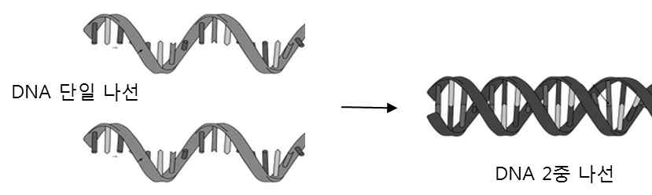

문제 4
수용액상에 존재하는 일정 길이 이상의 디옥시리보핵산(DNA)은 상온에서 다음과 같이 2개의 상보적인 단일 나선이 결합하여 안정한 2중 나선 구조를 형성한다.

(1) (2점) 위 결합반응의 엔트로피 변화(\(\triangle S\)) 및 엔탈피 변화(\(\triangle H\))를 설명하시오. 이때 DNA와 물 분자간의 상호작용을 무시하고 DNA 단일 나선과 DNA 2중 나선들만을 고려하시오.
(2) (3점) 용액의 온도를 올릴 때 위 결합반응의 자유에너지 변화(\(\triangle G\))를 설명하시오. 그리고 이와 같이 온도 증가 시 단일 나선과 2중 나선의 농도 변화와 그 이유를 설명하시오. (용액인 물 분자와의 상호작용은 무시)